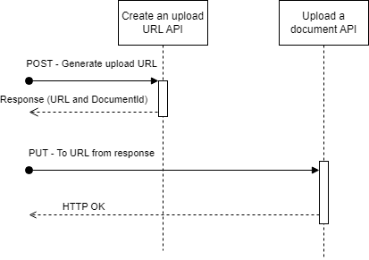

Send a document API
The Send a document API should be used to attach documents to your application. There are two steps for sending a document:
- A
POSTrequest to generate an upload URL - A
PUTrequest to upload the document
API specification
See the API Specification here
Create an upload URL
Making a POST request to the create upload URL endpoint will result in the following items being returned:
upload_url- This is the URL to make the PUT request to. This URL will only be valid for five minutes after generation. Five minutes is timed from the generation of the URL to the start of the upload. Neither the size of the document nor the speed of internet connection will cause the upload to timeoutdocument_id- This is a unique ID for this document, and must be included in the application submission payload
Upload a document
To upload a document, make a PUT request to the URL returned from the ‘Create an upload URL’ POST request above. This request should contain the document as the body content. A 200 HTTP code will be returned if the upload was successful. Documents will asynchronously be virus scanned and validated. Issues found during this process will be surfaced via the Application information API. Do not modify the URL received in the response.
Documents that have been uploaded can be used for up to 180 days, after which point they will be removed.
Diagrams

Examples
POST /v1/documents/url - Request
{
"data": {
"document_type": "TR1",
"file_length": 6362,
"file_sha256": "XHepSrLEhDPShYnPJwWArZERIvLcpvn8f8pyCS7crQA="
}
}
POST /v1/documents/url - Response
{
"upload_url": "documentcapture.landregistry.gov.uk/04c5c3fe-aa08-473b-9944-64ef5506f8e2",
"document_id": "04c5c3fe-aa08-473b-9944-64ef5506f8e2"
}
Note: The URL in the example may not be representative of the actual URL received.
PUT document - Request
- URL matches upload_url in
/v1/documents/urlresponse - Body content is the document to upload
PUT document - Response
- HTTP 200 on successful upload
- HTTP 4xx on failure
Technical details
File length/SHA-256
As part of the API to generate an upload URL, the API expects file_length and file_sha256
parameters. These parameters refer to the file that will be uploaded to the URL.
These values must also be provided when making the PUT request to the upload URL, as headers:
Content-Length : <value of file_length>X-Amz-Checksum-Sha256 : <value of file_sha256>
Where <value of x> are the values that were given to the request to generate the upload URL and
match the file that is included in the body of the request. If either of these values do not match
or are not provided, you will receive a signature verification failure (HTTP 403).
File length
The file_length should be the size of the file in bytes.
See below for code examples in several languages:
Python:
with open("test.pdf" "rb") as f:
file_bytes = f.read()
file_length = len(file_bytes)
Bash:
du -b test.pdf
Java:
File f = new File("test.pdf");
long fileLength = f.length();
JavaScript (Node):
const fs = require("fs");
const stats = fs.statSync("test.pdf");
const fileLength = stats.size;
File Sha256
The file_sha256 is the base64 encoded 256-bit binary digest of the bytes of the file. This should be exactly 44 characters long, regardless of the length of the file. See below for code examples in several languages:
Python:
with open("test.pdf" "rb") as f:
file_bytes = f.read()
hash = sha256(file_bytes)
file_sha256 = b64encode(hash.digest())
Bash:
cat test.pdf | openssl sha256 -binary | openssl enc -base64
Java:
File f = new File("test.pdf");
byte[] data = Files.readAllBytes(f);
MessageDigest digester = MessageDigest.getInstance("SHA-256");
digester.update(data);
String fileSha256 = Base64.getEncoder().encodeToString(digester.digest());
JavaScript (Node):
const fs = require("fs");
const crypto = require("crypto");
const shasum = crypto.createHash("sha256");
shasum.update(fs.getBytes());
shasum.digest("base64");
Walkthroughs
Uploading a document
Given the extra requirements for uploading documents and the new two-step process, the walkthrough below will demonstrate the full end-to-end for uploading a document to the new API. This example will use python but should give enough of an overview to be useful regardless of the language being used.
Firstly, the file must be loaded into memory. In this example, we are reading a file from the filesystem:
with open("test.pdf", "rb") as f:
file_bytes = f.read()
Once you have the bytes, the next step is to generate the file sha256 and the file length variables, using the python “hashlib” library:
hash = sha256(file_bytes)
file_sha256 = b64encode(hash.digest())
file_length = len(file_bytes)
Now you make the request to the document capture service, using the python “requests” library (note: authentication is removed for brevity)
response = requests.post(url, json = {
"data": {
"document_type": "TR1",
"file_sha256": file_sha256,
"file_length": file_length
}
})
The final step is to check we received a 200 HTTP response
if response.status_code != 200:
print(response)
raise RuntimeError("Failed to upload document")
print(f"Document with id {doc_id} uploaded successfully")
The whole process should be repeated for each document that has to be uploaded. The document IDs should be stored, so they can be used during the application submission process.